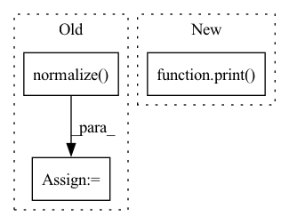

Pattern ID :4230

Before Change
if norm_feature:
node_feat = th.nn.functional.normalize(node_feat, p=2.0, dim=-1)
degs = graph.out_degrees().float().clamp(min=1)
norm = th.pow(degs, -0.5)
shp = norm.shape + (1,) * (node_feat.dim() - 1)
After Change
print("//////////////////////////////// Feature info: //////////////////////////////")
print("Node\"s feature shape:{}".format(node_feat.shape))
print("Walk\"s feature shape:{}".format(walk_feat.shape))
print("Edge\"s feature shape:{}".format(edge_feat.shape))
graph_data = (graph, labels, tr_label_idx, val_label_idx, test_label_idx, features)
return graph_data
In pattern: SUPERPATTERN
Frequency: 4
Non-data size: 3
Instances
Fragment ID: 15493516
Project Name: langgege-cqu/maxp_dgl
Commit Name: 5f428bb0d6bfb9dad16f32ca3d65785469b69c00
Time: 2021-12-11
Author: 8747734+bugczw@user.noreply.gitee.com
File Name: maxp_model_czw/unimp/util.py
M Class Name: AnonimousClass
N Class Name: AnonimousClass
M Method Name: load_dgl_graph(1)
N Method Name: load_dgl_graph(2)
M Parent Class:
N Parent Class:
M File Name: maxp_model_czw/unimp/util.py
N File Name: maxp_model_czw/unimp/util.py
M Start Line: 8
M End Line: 52
N Start Line: 13
N End Line: 47
'>
Before Change
// L-P normalization of the vectors
pos_h_embs = torch.nn.functional.normalize(pos_h_embs, p=self.l_p_norm, dim=1).view(-1, self.embedding_dim)
pos_t_embs = torch.nn.functional.normalize(pos_t_embs, p=self.l_p_norm, dim=1).view(-1, self.embedding_dim)
neg_h_embs = torch.nn.functional.normalize(neg_h_embs, p=self.l_p_norm, dim=1).view(-1, self.embedding_dim)
neg_t_embs = torch.nn.functional.normalize(neg_t_embs, p=self.l_p_norm, dim=1).view(-1, self.embedding_dim)
pos_score = self.compute_score(h_embs=pos_h_embs, r_embs=pos_r_embs, t_embs=pos_t_embs)
After Change
neg_scores = self.compute_score(h_embs=neg_h_embs, r_embs=neg_r_embs, t_embs=neg_t_embs)
print("Pos exmpls: ", (pos_exmpls))
print("Neg exmpls: ", (neg_exmpls))
loss = self.compute_loss(pos_scores=pos_scores, neg_scores=neg_scores)
return loss
'>
Fragment ID: 15493512
Project Name: pykeen/pykeen
Commit Name: 1d5f68485d677e8da1b117a722dc35782e1c08d2
Time: 2018-09-04
Author: ali-mehdi@live.de
File Name: src/kg_embeddings_model/trans_e.py
M Class Name: TransE
N Class Name: TransE
M Method Name: forward(3)
N Method Name: forward(3)
M Parent Class: nn.Module
N Parent Class: nn.Module
M File Name: src/kg_embeddings_model/trans_e.py
N File Name: src/kg_embeddings_model/trans_e.py
M Start Line: 117
M End Line: 137
N Start Line: 132
N End Line: 163
'>
Before Change
wavs = self.augmentation(wavs, wav_lens, init_params)
feats = self.compute_features(wavs, init_params)
feats = self.normalize(feats, wav_lens)
out = self.model(feats, init_params)
out = self.output(out, init_params)
pout = self.log_softmax(out)
After Change
ids, wavs, wav_lens = x
wavs, wav_lens = wavs.to(device), wav_lens.to(device)
print("The device is: ", device)
print(wavs.device)
// Adding environmental corruption if specified (i.e., noise+rev)
if hasattr(self, "env_corrupt") and stage == sb.Stage.TRAIN:
wavs_noise = self.env_corrupt(wavs, wav_lens, init_params)
'>
Fragment ID: 15493508
Project Name: speechbrain/speechbrain
Commit Name: 68d8792898257644b394b33a9cabe8cf0015da0c
Time: 2020-08-20
Author: plantinga.peter@protonmail.com
File Name: recipes/TIMIT/ASR_CTC/experiment.py
M Class Name: ASR_Brain
N Class Name: ASR_Brain
M Method Name: compute_forward(5)
N Method Name: compute_forward(5)
M Parent Class: sb.Brain
N Parent Class: sb.Brain
M File Name: recipes/TIMIT/ASR_CTC/experiment.py
N File Name: recipes/TIMIT/ASR_CTC/experiment.py
M Start Line: 27
M End Line: 28
N Start Line: 16
N End Line: 17
'>
Before Change
labels.to(self.device)
current_batch_size = self._get_current_batch_size(labels)
if self.normalize:
node_features = self.preprocessor.normalize(node_features, self.device)
labels = self.preprocessor.normalize(labels, self.device)
self.optimizer.zero_grad()
outputs = self.model.forward(node_features, adjacency_matrix, batch_size=current_batch_size)
loss = self.loss_function(outputs, labels)
After Change
def do_train(self, training_data: DataLoader, epoch: int) -> float:
training_loss = 0.0
pool = Pool()
print(pool.map(self._do_train_batch, training_data))
training_loss += sum(pool.map(self._do_train_batch, training_data))
pool.close()
self.get_logger().info("[Iteration %d] training loss: %.6f" % (epoch, training_loss))
return training_loss
'>
Fragment ID: 15493509
Project Name: kovanostra/message-passing-neural-network
Commit Name: a4119ee58bf8ea696c2ff9394a1096a14ee09613
Time: 2020-07-15
Author: kovanostra@gmail.com
File Name: message_passing_nn/model/trainer.py
M Class Name: Trainer
N Class Name: Trainer
M Method Name: do_train(3)
N Method Name: do_train(3)
M Parent Class:
N Parent Class:
M File Name: message_passing_nn/model/trainer.py
N File Name: message_passing_nn/model/trainer.py
M Start Line: 44
M End Line: 59
N Start Line: 45
N End Line: 49